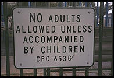

Using Python and Cocoa on OS X
Dethe Elza
Blast Radius
- Project Site: livingcode.org/projects/
- Blog: livingcode.org
- Source and Apps: livingcode.sf.net
Some Elementary Background

OS X, How and Why
- BSD Unix with a nice UI
- Apple OS with a robust underpinning
- GUI based on OpenGL, very fast, flexible, and powerful
- Many other nice features: powerful search tools, graphics manipulation, network autodiscovery (Rendezvous)
Cocoa: What and Why
- NextStep Object-Oriented GUI toolkit
- Coded in Objective-C
- Flexible, powerful, fast, beautiful
- Open-source version: GNUstep, based on OpenStep specification
- Kind of a steep learning curve
- Can require a lot of code to set up the UI
The Three Roads to Cocoa in Python
Cocoa is accessible from Python via the PyObjC library, but there are (at least) three ways to build the Cocoa UI.
- Interface Builder
- Renaissance
- Pure Python
The Dream of the Perfect Interface Interface
Interface Builder: What and Why
- Drag-and-drop "simplicity" for building user interfaces
- Creates a binary bundle of serialized objects
- Pro: You can see what your interface will look like
- Con: Can take a lot of time and tweaking to get interface right
Interface Builder: Continued
- Pro: Standard practice for OS X Apps
- Con: Hard to maintain and refactor binary bundle
- Pro: Can be used to create stub application
- Con: Later changes not automatically picked up
No Honor Among Renaissance Men

Renaissance: What and Why
- XML language for building GNUstep and Cocoa application UIs
- Alternative to binary NIB files
- Declarative, simple, and powerful
- Easy to create, maintain, modify, read
- Has some pretty severe limitations
Renaissance: Continued
- Pro: Good for teaching: Can show how to build app without screenshots of Interface Builder
- Con: Unfortunately missing a lot of UI classes
- Pro: Autolayout makes app development fast
- Con: Autolayout doesn't support dynamically changing interfaces
Interface Builder NG: Vim

Pure Python Cocoa: What and Why
- A Cocoa interface can be written in pure python using PyObjC
- It's tricky, and can be verbose
- Once the hard parts are done, they can be reused in other apps
- With nice wrappers, development can be as fast as Renaissance, more powerful than Interface Builder
Pure Python Cocoa: Continued
- Wrapping the Cocoa API with Pythonic factories
- Rely on good defaults, lots of keyword options
- Building slowly, as needed, not heavily designed up front
- Could easily be wrapped to read in from XML
Mac Snobbery for Fun and Profit

What makes a complete OS X application?
- Menus, including special Apple menu, Services sub-menu, Windows menu
- Handle cut-and-paste, drag-and-drop across applications
- Minimize, zoom, hide behaviours
- Standard shortcuts for menus and commands
- Follow Apple's UI Guidelines
Having our cake and eating it too
- Interface Builder, Renaissance, and Pure Python UIs can live together in peace.
- There's nothing wrong with visual tools, they're handy, I just don't like to be forced to use them when inappropriate
nibtoolcan convert binary NIB to text (but not vice versa)- "Simple things should be declarative. Complex things should be procedural." --Adam Bosworth
- Apple themselves are moving toward a declarative XML syntax for building UIs, but their syntax is XHTML
- (I think this makes a *lot* of sense)
NextStep Cocoa Interface Builder
- Provides a rich palette of widgets
- Gives visual hinting to help follow Apple's UI Guidelines
- Blessed by Apple as the One True Way
- WYSIWYG
21st Century Renaissance

Renaissance: The Missing Manual
Renaissance is somewhat XUL-like, but not as thoroughly developed or documented
- http://www.gnustep.it/Renaissance/Manual/index.html
- http://livingcode.blogspot.com/2004/11/renaissance-tags.html
- Still needs more work: <button/>, <box/>, <hbox/>, <vbox/>, <hspace/>, <vspace/>
Missing Widgets
|
|
Missing Attributes
- Alignment not working as well as it should
- ID could be exposed to the application
- Make it easier to add and remove elements at runtime (more dynamic)
- Tooltips
- More font control, in more widgets
- Some of the special menu types
- Allow <view/> and <panel/> to have child views
- Best-effort pass-through of unrecognized attributes using key-value binding
- Inter-file references
Other Limitations of Renaissance
- Not designed for dynamic updates
- Inexplicable crashes
- Tricky to add new tags from Python (but it can be done)
Do-It-Yourself
Four ways to make Cocoa more "Pythonic"
- Categories: Extend existing Cocoa classes in-place
- Subclass: Use __new__ hack for Python-style intialization
def __new__(cls): return cls.alloc().init()
- Factory Functions: Take a dict of options and return an intialized object
- Wrappers: Normal Python classes which act as a bridge to Cocoa class
Reinventing Lisp
- Making a utility library can make Cocoa very easy to use
- Like Lisp and Smalltalk, Python can grow to resemble you
- This has the potential to make your code hard for others to follow
Enough knowledge to be dangerous
What about the alternatives
- Carbon
- wxPython
- pyGTK
- pyXPCOM
- tkinter
- pyGame
Problems with the alternatives
- Not Cocoa, don't benefit from things like Services
- Not sufficiently Mac-like
- Every one has it's own event system
- Most include a lot of non-UI stuff, like strings, timers, etc.
- Libraries much larger than Python itself
The benefits of XML
- Every UI library seems to have its own XML resource format
- Renaissance, Glade, UIML, etc...
- This is the right place to be cross-platform, not the library
- Apple is moving this way in OS X (10.4)
The benefits of XML (Continued)
- An XML UI library should be cross-platform and familiar
- There should be good WYSIWYG tools
- It should support platform-specific extensions without breaking
- You should be able to script it in Python, of course
- In OS X it's called Dashboard
- For the rest of the world it's called HTML 5
Thank you for inviting me here
Any questions?
In the Beginning